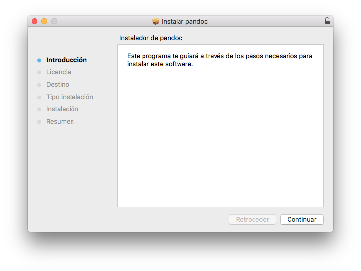

Pandoc
¿Qué es Pandoc?
Pandoc es un conversor que nos permite cambiar el formato de un documento. Tiene especial relevancia su utilidad para traducir Markdown a HTML. No obstante, soporta otros muchos formatos, PDF, ODT, EPUB, etc.
¿Cómo se instala Pandoc?
Linux
La forma más sencilla de instalar Pandoc es a través del gestor de paquetes de tu distribución. Está disponible en los repositorios de:
- Debian
- Ubuntu
- Slackware
- Arch
- Fedora
- NiXOS
- openSUSE
- gentoo
No obstante, las versiones de Pandoc que figuran en estos repositorios suelen estar desactualizadas.
Si estás en Debian o Ubuntu de 64-bit, puedes descargar e instalar un fichero .deb siguiendo este enlace.
Una vez descargado, puedes instalarlo por línea de comandos:
$ sudo dpkg -i <nombre_paquete_descargado>
O gráficamente, pulsando dos veces sobre el fichero descargado:

Mac
Para Mac disponemos de un instalador gráfico que puede ser descargado aquí.

La segunda opción es instalar Pandoc mediante Homebrew:
$ sudo brew install pandoc
Windows
Para instalar Pandoc en Windows basta con descargar y ejecutar el instalador que puedes encontrar aquí.

Ejemplos de uso
La forma general de convertir un formato a otro usando Pandoc es:
$ pandoc nombre_fichero_entrada -f formato_entrada -t formato_salida -o nombre_fichero_salida
Pasar de Markdown a HTML
$ pandoc fichero.md -f markdown -t html -s -o fichero.html
En este caso hemos añadido la opción -s para generar un html standalone. De esta forma, añade al fichero de salida html, las etiquetas html, head, etc.
Por defecto, si usamos como parámetro un fichero en Markdown, Pandoc lo convierte a HTML. Por tanto, una forma equivalente de pasar de Markdown a HTML es:
$ pandoc fichero.md -s -o fichero.html
Pasar de Markdown a PDF
$ pandoc fichero.md --latex-engine=xelatex -o fichero.pdf
Pasar de Latex a Markdown
$ pandoc fichero.tex -o fichero.md
Pasar página web a Markdown
$ pandoc -s -r html https://es.wikipedia.org/wiki/Markdown -o example12.md
Pasar de Markdown a EPUB
$ pandoc fichero.md -o fichero.epub
Más ejemplos
Puedes encontrar más ejemplos de conversión de formatos con pandoc siguiendo este enlace.